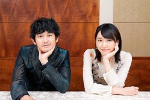

Q. dymに入社を決めた現在の心境は？
 中川:高ぶってます！！！！成田:楽しみと焦りかな(笑)
谷:不安と楽しみと…緊張してるかも(笑)
高原:楽しみしかない！同期と顔合わせした時に、みんな頭キレキレだし面白いし、同い年なんだけど、とても尊敬できる人達だと思ったんだよね。 だから、そんな同期と働ける事に対する楽しみしかない！
Q. 何を基準に就活をした？
谷:僕は、ベンチャーを中心に見ながら、自分が成長出来るところを見ていたかな？みんなは？中川:僕は人事部の人と話しが合うかとか、会社の雰囲気を基準に就活してた！
高原:業界や会社の規模に関わらず、自身の成長が見込めるかどうかを軸に就活をしてた。
成田:若いうちから裁量を持って仕事が出来るかどうか！
Q. dymの第一印象は？
成田:むちゃくちゃ大きいこと言ってるなって(笑)中原:社長といい社員さんといい、勢いが段違いでしたね(笑)
高原:そうだよね。僕もなんて勢いのある会社なんだと思った。会社としての成長速度もそうだけど、社員のノリがサークルや部活動の絡みに近かったので、若いな～と思った(笑)
谷:僕も平均年齢若っ！って思った。会社として勢いがありそうに見えた！
Q4.8期生に一言お願いします
N.K:良い意味で遠慮せずにバリバリ頑張ってほしいなって思っています。 昔と比べたらDYMは大きくなっています。ただ、もちろんみんなわかってるとは思うんですが、大企業にサラリーマンとして入る感覚ではないんですよね。例年見てるとみんなが思っている以上に主張したり、ぐいぐい遠慮なく発言して貰った方が会社としては嬉しいですし、遠慮なくぐいぐい来てほしいです。H.N:決められたことはちゃんとやってほしいです。難しいですけどやったらやった分返かってきますしね。せっかくベンチャーに入ったからにはやってほしいです。それだけです。まだ内定者はお客さんです。ただ4月から社員なんだからレベルの高い状態で入ってきてほしいです。
Y.K :2人に比べたら小さい話になるんですけど、迷ったらどんどんやってほしいなって思います。笑 やっぱり一番下で上司の目を気にしてしまったりとか、言われていないからやらなかったとかあると思うんですよ。 そうじゃなくて考えればやった方がいいこととか、ちょっとおかしいなって思ったことをどんどんよりいい方向に進めていってほしいです。自分の選択肢をいい方に持っていって、どんどん挑戦してほしいなって思います。